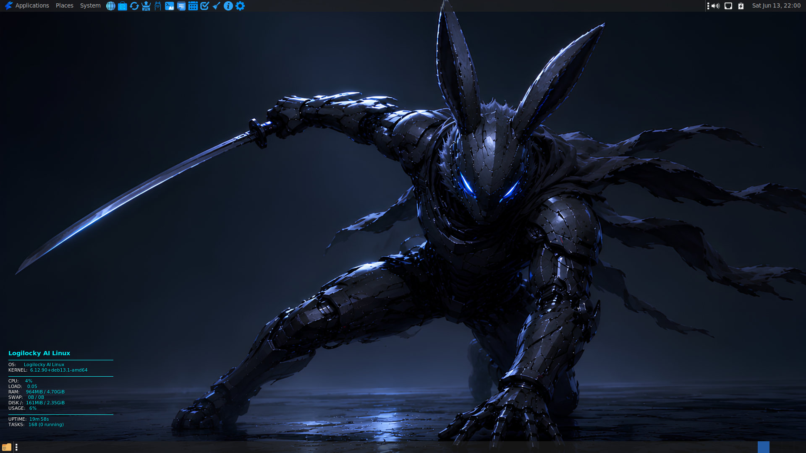
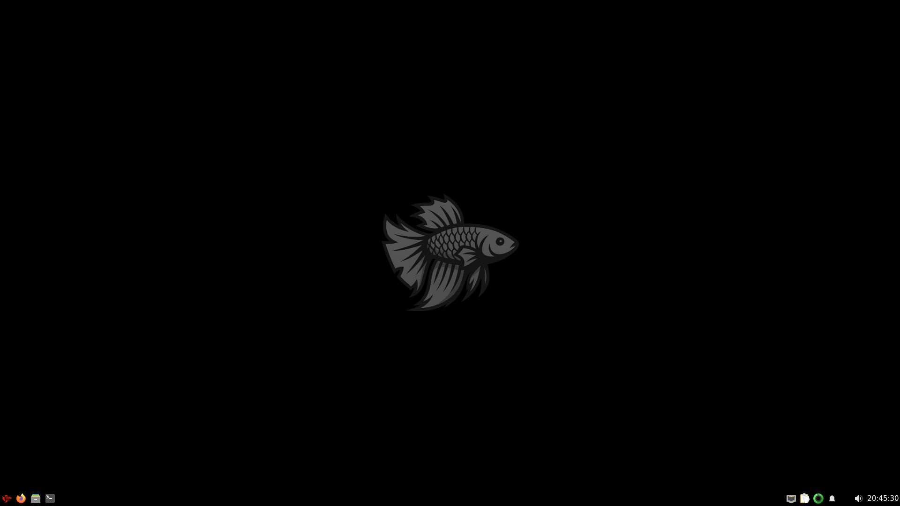
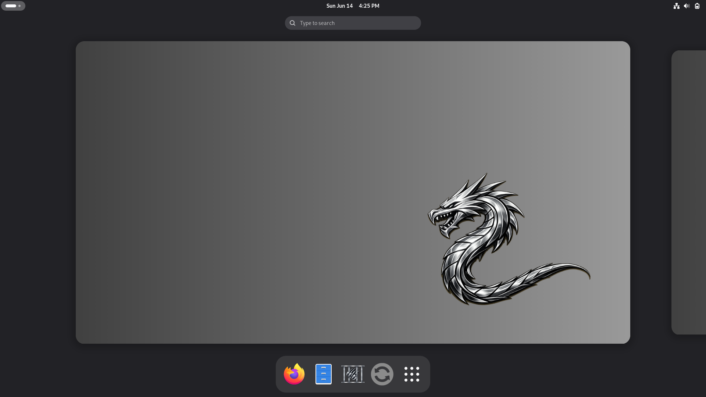
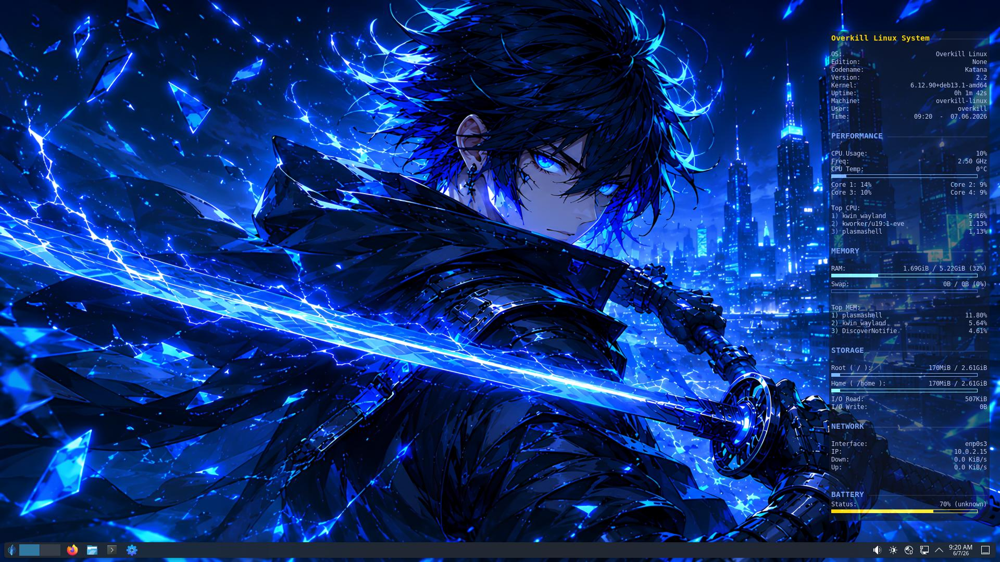
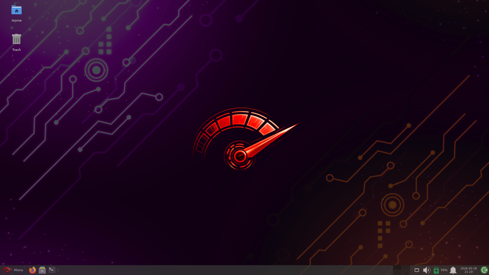
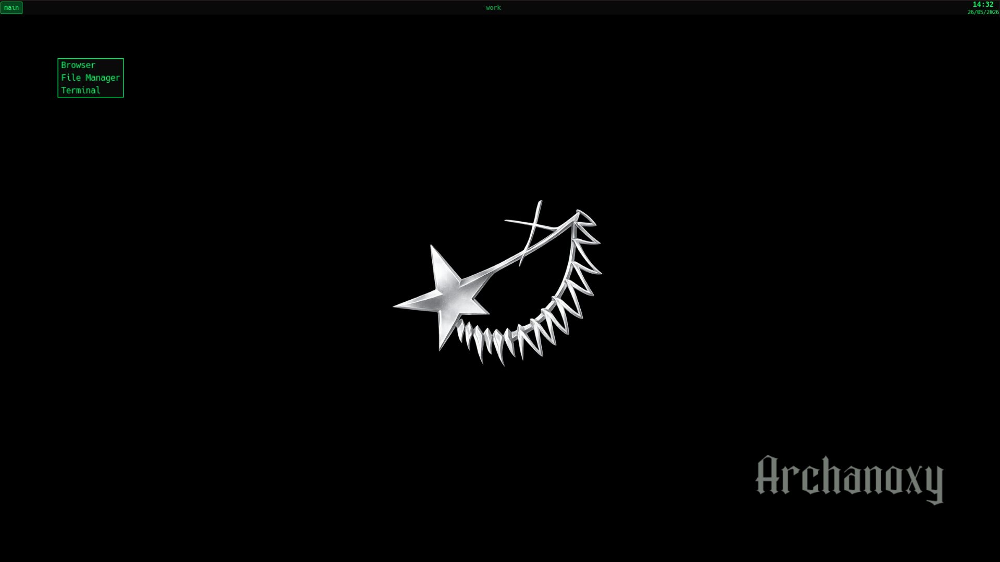
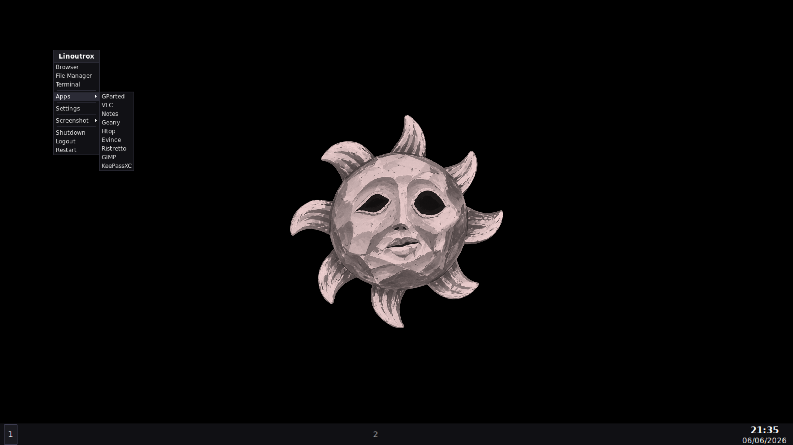
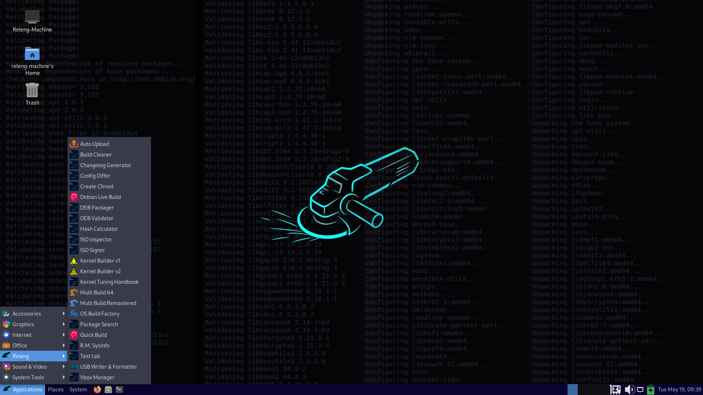

Logilocky AI Linux
AI WorkstationLogilocky AI Linux is a Linux distribution built on top of Debian. The goal of the distribution is to run offline AI models, provide a suitable environment for AI developers, make AI tools easily accessible, and offer an easy-to-use experience for Linux beginners. It also provides tuned kernel settings specifically optimized for AI workloads.
The distribution has its own rich ecosystem, featuring numerous desktop applications built from scratch for Logilocky. This includes tools for daily use, AI utilities, package and system management, office tasks, security, and privacy.
It uses the standard Debian installer and the MATE desktop environment. A live try feature is also available so you can test it before installing.


Zenclora OS
DesktopZenclora is a Debian-based desktop Linux distribution optimized for stability and daily use. It offers simplified package and system management commands to make Linux usage easier, avoiding unnecessary complexity while providing full control. From browsing the web to handling office tasks, the system stays out of the way and lets the user focus. A curated selection of pre-installed applications provides a frictionless out-of-the-box experience.


Fishy Linux
LightweightFishy Linux is a fast and minimal Debian-based Linux distribution. It uses the lightweight and efficient LXQt desktop environment. Fishy Linux comes with broad hardware support and can be installed to disk using the Debian Installer. Designed for older hardware and low-resource environments, it strips away unnecessary background services while maintaining a fast, functional, and highly productive user experience.


Linux Engineer Toolkit Live
RescueLinux Engineer Toolkit (LengToolkit) Live is a specialized, recovery-oriented Linux distribution designed for system engineers and IT professionals. Operating exclusively in Live mode, it provides a robust environment to rescue failing systems, recover lost data, and manage disk infrastructures without the need for installation.


Hardenwing OS
SecurityHardenwing OS (formerly Slarpx) is a security-focused Linux distribution based on Debian Stable. It adopts a multi-layered defense architecture against cyber attacks, incorporating aggressive mitigation techniques alongside kernel, system and network-hardening configurations. Comprehensive security measures include BadUSB protection, permission-hardening services, package manager hardening, module blacklisting, PAM and sudoers hardening. A strict firewall policy enforces Quad9 DNS and allows only basic internet access. The system boots into the Debian Installer which installs a customised GNOME (Wayland) desktop.


Overkill Linux
All-In-OneOverkill Linux (formerly Megamix) is a Debian-based Linux distribution that uses the KDE Plasma desktop environment. It offers customised editions tailored to every user profile — developers, gamers, multimedia creators, scientists, crypto users, engineers, and students. Through the Overkill System Manager, all required packages for each edition are downloaded and kernel settings are applied with a single click. The System Manager also provides ZRAM support, NVIDIA driver installation, package management, DNS configuration, browser installation, and general system administration tooling. One ISO; install the preferred edition after boot and the system is ready.


Almighty Linux
OSINTAlmighty is a Linux distribution based on Debian Kali Linux. Almighty Linux comes pre-configured with a wide range of OSINT tools, and also includes OSINT tools designed from the ground up specifically for the platform. The distribution includes privacy and security tools to ensure operational security during information gathering. Almighty also uses hardened kernel settings.


Ultra Performance Tuning
Real-TimeUltra Performance Tuning is a Debian-based real-time Linux distribution designed for timing-critical, low-latency workloads. Featuring a fully preemptive PREEMPT_RT patched kernel, CPU scheduler tuning, and hardware IRQ affinity steering, it minimises system and input latencies. A lightweight, custom-tailored XFCE4 environment is optimised specifically for digital audio workstations (DAW), robotics, and industrial automation where timing precision and predictability are critical.


Archanoxy
PentestingArchanoxy is a penetration testing focused GNU/Linux distribution built directly on top of Arch Linux and BlackArch Linux repositories. The operating system utilizes a lightweight, minimal Openbox Window Manager (WM), completely stripped of non-essential background processes to maximize hardware performance and user control. With a strong focus on terminal-centric workflows, Archanoxy provides a clean, raw environment where users can choose to install only the packages they need during or initialize toolsets in seconds through custom text installer interface.

Linoutrox
MinimalistLinoutrox is a minimal Linux distribution based on Debian, designed with the pure philosophy of minimalism. It uses the Openbox Window Manager, completely stripped of distractions. Linoutrox provides you with only the essential and sufficient applications. The distribution also includes custom tools to simplify usage and configuration for daily tasks. Linoutrox utilizes the standard Debian installer, and a live mode is available for testing.


Releng Machine
DevOpsReleng Machine (LBuildstation) is a Debian-based custom operating system designed specifically for Linux distribution development and ISO image generation. Serving as the build kitchen for Nixovena Labs, it automates multi-distro builds, minimises compilation times, and simplifies packaging workflows. The system ships with developer automation utilities, virtual machine scripts, package validation tools, and ISO analyser software.